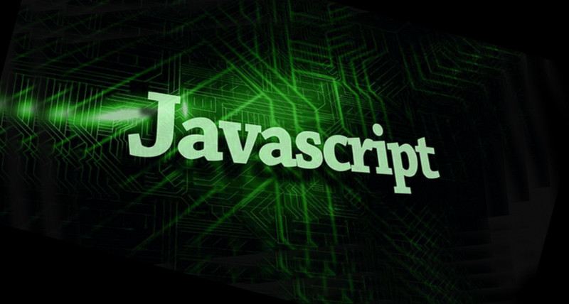
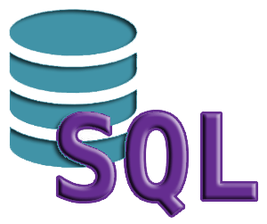
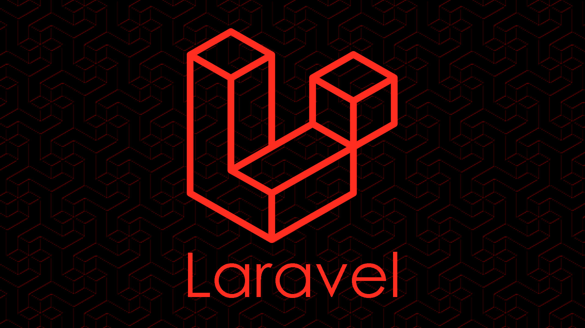
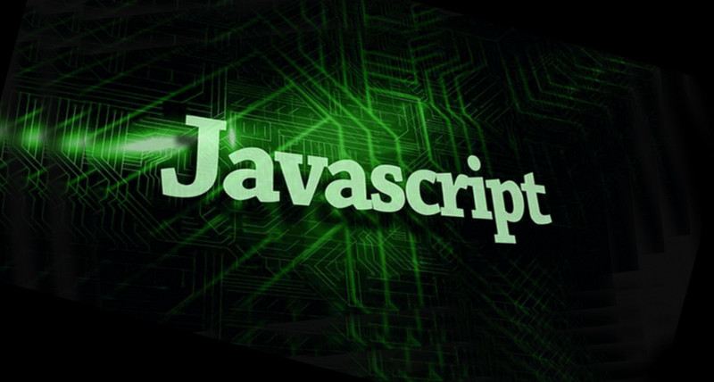
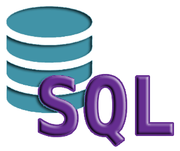
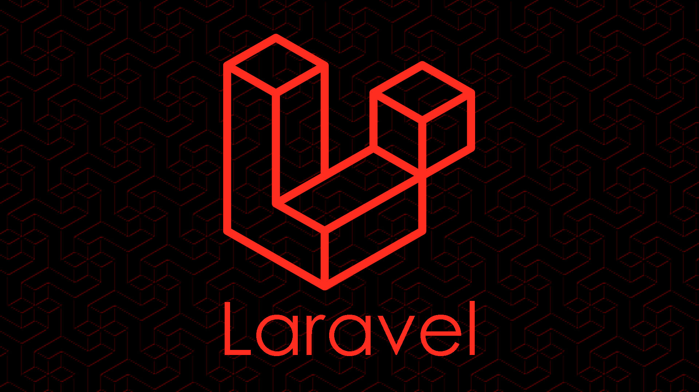

Keran Theydert
Bonjour ! Je suis Keran Theydert, étudiant en BTS
Services Informatiques aux Organisations (SIO) option Solutions
Logicielles et Applications Métiers (SLAM) au sein du campus MEWO.
passionné par le monde du développement informatique, je m'épanouis
particulièrement dans la création d'applications, sites web et mobiles.
Je vous soumet mon portfolio où je présente présente mon parcours
académique et professionnel.

QU'EST-CE QUE LE BTS SIO SLAM ?
Le BTS SIO option SLAM forme des spécialistes du développement informatique,
capables de concevoir, programmer et maintenir des applications pour les
entreprises. Les diplômés apprennent à analyser les besoins des clients,
à développer des logiciels et sites web, à gérer des bases de données et
à assurer la sécurité des applications. Grâce à une formation alliant
théorie et pratique, ils maîtrisent divers langages de programmation
(Java, Python, PHP, SQL…) et les méthodes de gestion de projet.
Ce diplôme permet d’accéder à des postes comme développeur web,
analyste programmeur ou chef de projet junior, avec la possibilité
de poursuivre des études en informatique.
MES COMPÉTENCES
Passionné par le développement web et logiciel, j'ai acquis des compétences
solides en HTML, CSS et JavaScript, me permettant de créer des interfaces
modernes, interactives et responsives. Grâce à PHP et SQL, je maîtrise la
gestion des bases de données et le développement back-end, assurant la
création d’applications dynamiques et sécurisées. J’ai également approfondi
mes connaissances avec Laravel, un framework puissant qui optimise la structure
et la performance des projets web. Fort de ces compétences, je suis capable de
concevoir des solutions complètes, allant du front-end au back-end, pour répondre
aux besoins spécifiques des utilisateurs.
 





MES OUTILS
Pour mener à bien mes projets, j’utilise des outils performants qui optimisent mon
workflow et garantissent une meilleure productivité. Visual Studio Code et PhpStorm
sont mes environnements de développement privilégiés, me permettant d’écrire du code
efficacement avec des fonctionnalités avancées. Pour le design et la conception
d’interfaces, j’exploite Figma, un outil puissant de prototypage et de maquettage.
Enfin, grâce à GitHub, je gère le versionnement de mes projets, assurant une
collaboration fluide et un suivi optimal du code. Ces outils me permettent de
concevoir des solutions robustes et bien structurées, en alliant performance et esthétisme.

IMMERSION EN ENTREPRISE
MES QUALITÉS
En tant que développeur passionné, je me distingue par mon esprit technique, ma curiosité constante
et ma capacité à travailler efficacement en équipe. Ces qualités me permettent d’aborder chaque projet
avec rigueur, d’apprendre rapidement de nouvelles technologies, et de collaborer harmonieusement
dans des environnements dynamiques.

Technicien

Curieux

Esprit d'équipe
MON PARCOURS SCOLAIRE
Baccalauréat géneral 2020-2021
Spécialité dans la philosophie, littérature et mathématique
📄 Télécharger mon BACMES PROJETS PROGRAMMATION
Voici quelques projets que j’ai réalisés dans le cadre de ma formation BTS SIO SLAM. Cliquez sur les images pour accéder aux dépôts GitHub.
Site Foot-Perfor
le projet était de réaliser une
permettant de gérer des entraînements de
football en HTML/CSS/JAVASCRIPT/PHP.
La Reproduction de Cette
page d'accueil de site officiel de BURGER KING
avait pour objectif d'avoir des bases en HTML
ET CSS
Un Shi Fu Mi réalisé
dans le but de comprendre les base en JavaScript
comprendre, avoir de la logique et très attractif
il contient aussi du HTML/CSS


.jpg)